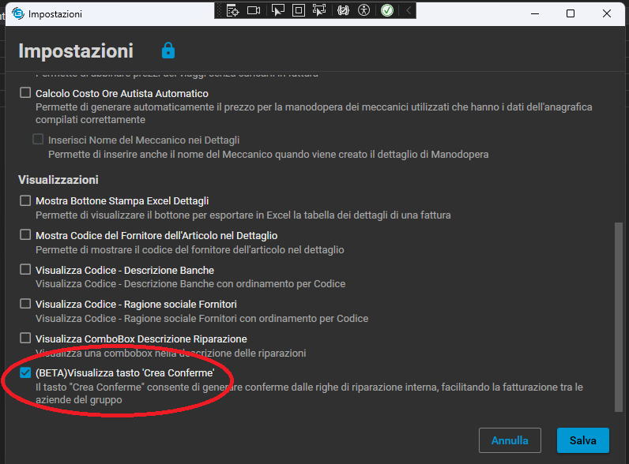
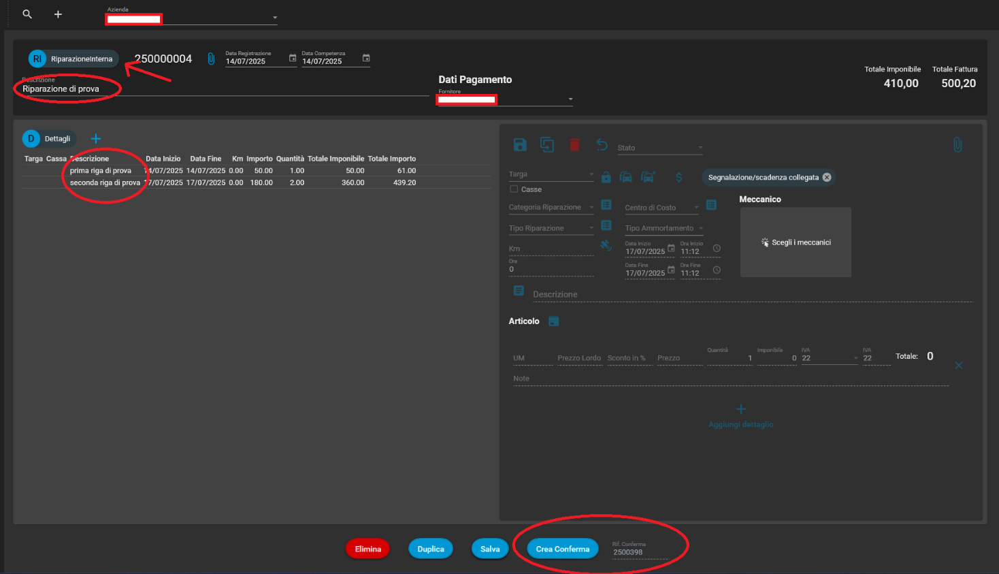
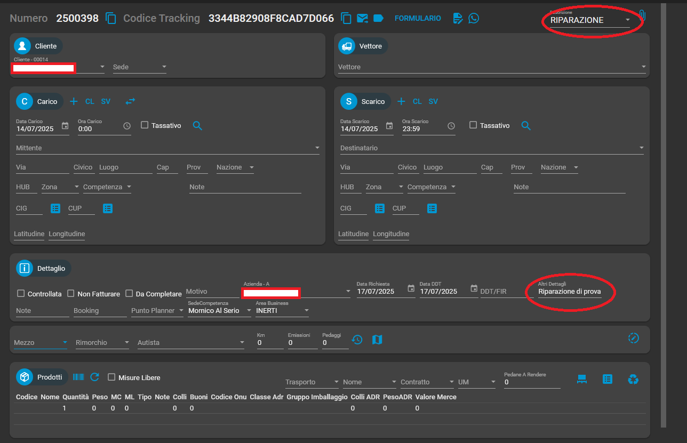
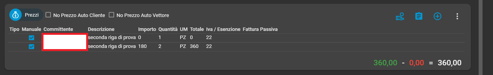

🛠️ Riparazione interna verso conferme
- Nel caso dell’esigenza di un cliente che ha multi aziendale; se ha un’azienda (officina), può caricare delle riparazioni INTERNE, che successivamente può fatturare ad un’altra azienda (trasporti).
In questo caso, si può attivare in Impostazioni dal modulo riparazioni il flag: Visualizza tasto ‘Crea Conferme’

- Una volta attivata l’impostazione, il modulo riparazioni cambia se si crea/modifica una riparazione INTERNA

- Nello specifico, esce il menu a discesa dei fornitori con l’esclusiva visibilità dei vettori che sono abbinati alle aziende principali (esclusa la corrente).
Nella parte bassa compare un tasto ‘Crea Conferma’ ed una casella di testo ‘Rif. Conferma’.
Una volta premuto; questo tasto genera una conferma, e ne mette il riferimento (numric) nella casella di testo.
La conferma generata, porterà in descrizione la voce ‘RIPARAZIONE’ (che non dovrà mai essere cancellata dall’utente, altrimenti perde il riferimento alla riparazione originale).
In altri dettagli della conferma invece, porterà la descrizione generica (causale) della riparazione

Inoltre, nei prezzi riporterà i dati delle righe prezzo della riparazione (ad esclusione delle aggiunte in riga).

Questa conferma avrà come cliente indirettamente, l’azienda che precedentemente era stata caricata come vettore in riparazione.
Appare quindi necessario, come non mai per questo caso, che le aziende vengano salvate sia come vettori e collegate in anagrafica aziende, e anche come clienti, i quali verranno intercettati nella conferma tramite partita iva